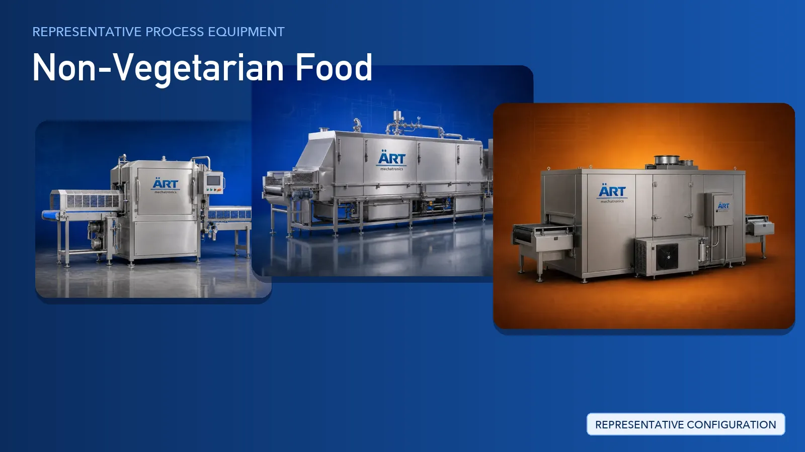

Non-Vegetarian Food Processing Plant & Machinery Solutions (Meat, Poultry, Seafood & Egg Products)
Non-vegetarian food processing covers meat, chicken, pork, fish, shrimp, seafood and egg products supplied in fresh, dried and frozen formats.

About Non-Vegetarian Food processing
ART Mechatronics provides processing-plant equipment and turnkey systems for non-vegetarian food units, covering material handling, cutting, marination and mixing, cooking, freezing, cold storage and hygienic packaging. Our scope is the processing line downstream of raw material intake, engineered for food safety, product consistency and export-ready output.
Complete Non-Vegetarian Food Process Flow
Chilled or frozen raw material is received and moved into the processing hall under controlled temperature.
Keeps the cold chain unbroken from the first stage onwards.
Raw material is washed, graded by size and prepared, including shell and skin removal for shrimp, fish and egg products.
Ensures:
- Hygienic, prepared raw material
- Uniform sizes for downstream stations
- Removal of unwanted material
Prepared material is cut, portioned or minced to the required specification.
Produces:
- Portions, fillets, cubes and strips
- Minced and emulsified material
- Uniform, ready-to-process input
Cut material is mixed with marinades, brines or binders and, where required, formed into patties, nuggets and similar shapes.
Gives even flavour pick-up and consistent portion shape.
Value-added products are cooked, steamed or fried and then cooled before freezing.
Supports:
- Ready-to-cook and ready-to-eat products
- Developed texture and flavour
- Controlled and repeatable thermal treatment
Products are frozen and transferred into cold storage ahead of packing and dispatch.
Delivers:
- Individually frozen pieces
- Preserved texture and quality
- Stable frozen shelf life
For dried formats such as dried fish, prawn and egg products:
Finished product is packed under hygienic conditions, checked inline and prepared for cold-chain dispatch.
Suitable for retail trays, vacuum packs and bulk frozen cartons.
Plant-wide hygiene and air control runs alongside every stage:
Machinery Required for Non-Vegetarian Food Plant
Turnkey Non-Vegetarian Food Plant Solutions
ART Mechatronics offers complete turnkey solutions for non-vegetarian food processing plants, including:
- Process design & plant layout
- Hygienic material handling and conveying
- Cutting, portioning and mincing stations
- Marination, mixing and forming systems
- Cooking, freezing and cold storage systems
- Air handling and hygiene control
- Automation & control panels
- Packaging line integration
- Installation & commissioning
- After-sales support
We customize solutions based on:
- Product category (meat, poultry, fish, shrimp, seafood or egg products)
- Finished format (fresh, dried or frozen)
- Production capacity
- Packaging and export requirements
Why Choose ART Mechatronics for Non-Vegetarian Food
- Turnkey expertise in meat, poultry and seafood processing lines
- Hygienic, washdown-friendly food-grade plant design
- Integrated cooking, freezing and cold storage systems
- Cold-chain-led layout planning
- Inline inspection and hygienic packaging integration
- Global export and after-sales support capability
Machinery in a Non-Vegetarian Food plant
Where it's used
Get pricing & specs for the Non-Vegetarian Food plant
Share the product, target capacity, current process and plant location. These details help our engineers discuss the right machine or line configuration.
One partner, from design to start-up
ART Mechatronics designs, manufactures, installs and commissions your Non-Vegetarian Food plant solution with regional presence in India, UAE and Thailand.